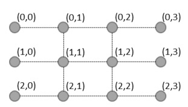

BZPRO
#5207. [Jsoi2017]隧道
内存限制：256 MiB
时间限制：20 Sec
提交
提交记录
讨论
题目描述
JSOI的地下通道系统由R行C列共R×C个关键节点组成。行和列分别用0到R-1和0到C-1编号，其中最左列（0）和最
右列（R-1）的关键节点是通道系统的地上出入口。通道系统由水平和竖直的单位长度无向隧道相连，构成一个网
格图。下图展示了一个3行4列的地下通道系统

经过情报部门的精密估计，对于每条地下隧道都有一个概率P，表示这条地下隧道被破坏的概率。每条隧道被破坏
均为独立事件。现在给出了这个地下网络，JYY需要计算在遭遇敌军破坏后，地下通道系统仍然能够运作的概率。
地下通道系统能运作当且仅当存在一系列未被破坏的隧道，经由这些隧道能从第0列的某个地上出入口到达第C-1列
的某个地上出入口。
输入格式
第一行包含两个正整数R、C。
接下来R行，每行包含?C-1个正整数。
第i行的第j个正整数表示坐标为(i-1,j-1)节点的右侧隧道被破坏的概率（百分数）。
接下来R-1行，每行包含C?2个正整数。
第i行的第j个正整数表示坐标为(i-1,j)节点的下方隧道被破坏的概率（百分数）。
1≤R*C<110,1≤P≤99
输出格式
输出一行一个整数，表示所有关键节点仍然连通的概率。
为了避免复杂的浮点数运算，设最终答案的最简有理数表示为p/q
你只需要输出(P*Q-1)mod(10^+9+7)的值。Q-1是满足q*q-1=mod10^9+7=1的最小正整数。
样例
样例输入
2 3
50 50
50 50
50
样例输出
500000004
数据范围与提示